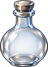
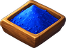

Blue Potion
Obtaining
- Bought from Grocer Beatriz for 150 gold
- Bought from Grocer Sancho for 150 gold
- Bought from Grocer Ingvar for 150 gold
- Bought from Divela the Healer for 150 gold
- Bought from Grocer Maud for 150 gold
- Bought from Apothecary Elric for 150 gold
- Bought from Grocer Wystan for 150 gold
- Bought from Foreman Durgan for 150 gold
- Bought from Grocer Hallgerd for 150 gold
- Bought from Apothecary Dagny for 150 gold
- Bought from Grocer Godric for 150 gold
- Bought from Apothecary Hilda for 150 gold
- Bought from Apothecary Eskil for 150 gold
- Bought from Grocer Thora for 150 gold
- Bought from Grocer Dietrich for 150 gold
- Bought from Grocer Orvar for 150 gold
- Bought from Sister Hildegard for 150 gold
- Bought from Grocer Rupert for 150 gold
- Bought from Apothecary Sieglinde for 150 gold
- Bought from Father Benedikt for 150 gold
- Bought from Apothecary Kuno for 150 gold
- Bought from Grocer Gisela for 150 gold
- Bought from Wren the Herbalist for 150 gold
- Bought from Mother Nettle for 150 gold
- Bought from Mother Hild for 150 gold
- Bought from Apothecary Gonzalo for 150 gold
- Bought from Grocer Elvira for 150 gold
- Bought from Grocer Bermudo for 150 gold
- Bought from Apothecary Leonora for 150 gold
- Bought from Father Tomas for 150 gold
- Made with Alchemy level 1 at a Alchemy Lab
- Reward from the quest The Wolf of Tannheim
- Reward from the quest The Drowned Dead
- Reward from the quest The Restless Kings
- Reward from the quest Red Gold
- Reward from the quest The Hermit's Vigil
- Reward from the quest The Folk of Elderglade
- Reward from the quest Whispers in the Ruins
- Reward from the quest Frog Venom
Creation
| Skill | Makes | Needs | Where | Tool |
|---|---|---|---|---|
| Alchemy 1 | 1 | 1 ×  Potion Bottle, 1 × Blue Sand, 1 × | Alchemy Lab |